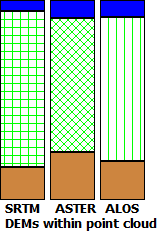

 |
For each point, computes if the elevation from each of the global
DEMs is:
- Between the ground and top of canopy for the ICESat-2 elevation data
- Within the bounds of the point cloud for that DEM posting location, for
the photo data or lidar LAS data.
Color coding:
- Blue: DEM point is above the cloud (sky shot)
- Green: DEM point is within the cloud
- Brown: DEM point is below the cloud (ground shot)
|